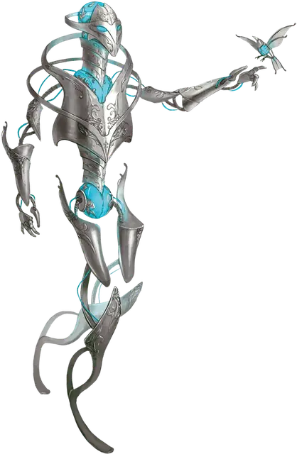

Металлический миротворец
Metallic Peacekeeper
Средний Конструкт, нейтрально-добрый

Класс Доспеха 17 (природный доспех)
Хиты 68 (8к8 + 32)
Скорость 30 футов
| мод | спас | ||
|---|---|---|---|
| СИЛ | 17 | +3 | +3 |
| ЛОВ | 10 | +0 | +0 |
| ТЕЛ | 18 | +4 | +4 |
| мод | спас | ||
|---|---|---|---|
| ИНТ | 14 | +2 | +2 |
| МДР | 12 | +1 | +1 |
| ХАР | 11 | +0 | +0 |
Иммунитет к урону огонь
Иммунитет к состояниям испуг, истощение, окаменение, отравление, очарование, паралич
Чувства тёмное зрение 60 футов, пассивное Восприятие 11
Языки Общий, Драконий, Телепатия 30 фт.
Опасность 4 (1100 опыта)
Бонус мастерства +2
Особенности
Неизменяемая форма. Миротворец обладает иммунитетом ко всем заклинаниям и эффектам, изменяющим его форму.
Телепатическая связь. Пока миротворец находится на том же плане существования, что и его хозяин, он может магически передавать своему хозяину то, что чувствует, и они могут общаться друг с другом телепатически.
Действия
Мультиатака. Миротворец совершает две рукопашных атаки.
Удар. . Рукопашная атака оружием: +5 к попаданию, досягаемость 5 фт., одна цель. Попадание: 16 (3к8+3) дробящего урона.
Успокаивающий туман (перезарядка 5-6). Миротворец выпускает успокаивающий газ в сферу радиусом 30 фт., с центром на себе. Каждое существо в этой области должно преуспеть в спасброске Харизмы Сл 14, иначе станет очарованно миротворцем на 1 минуту. Пока существо очаровано таким образом, оно недееспособно и имеет скорость 0.
Описание
Когда металлический дракон привязывается к поселению низших существ - часто после того, как некоторое время прожил там в гуманоидной форме, - дракон может решить создать металлического миротворца для защиты этого места. Миротворец может охранять общину веками, стоя на месте своего дракона-создателя и поддерживая мир и порядок.
Металлический дозорный. Металлический дозорный - это страж, созданный металлическим драконом, выкованный из металла, связанного с его создателем, и питаемый энергией дыхания дракона. Искусственное существо, изваянное в элегантной филигранной технике, призвано разряжать напряженность, которая может перерасти в насилие.